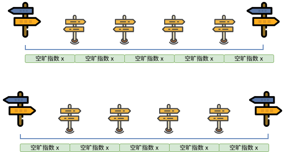

对于部分题目，解题的时候往往会考虑枚举答案然后检验枚举的值是否正确。若满足单调性，则满足使用二分法的条件。把这里的枚举换成二分，就变成了「二分答案」。 时间复杂度从
优化到 。 关键词：最大值最小，最小值最大
思路：
本题要求求出满足条件的最大砍伐高度
首先编写一个判定函数，用于判断给定的砍伐高度
1@open2bool check(int h){3 i64 sum=0;4 for(int i=1;i<=n;i++){5 if(a[i]>=h) sum+=a[i]-h;6 }7 return sum>=m;8}那么很容易写出完整代码，时间复杂度为：
代码：
x1
3using namespace std;4
5using i64=long long;6
7int a[1000010];8int n,m;9bool check(int h){10 i64 sum=0;11 for(int i=1;i<=n;i++){12 if(a[i]>=h) sum+=a[i]-h;13 }14 return sum>=m;15}16void Showball(){17 cin>>n>>m;18 for(int i=1;i<=n;i++) cin>>a[i];19 for(int i=400000;i>=0;i--){20 if(check(i)){21 cout<<i;22 break;23 }24 }25}26int main(){27 ios::sync_with_stdio(false);28 cin.tie(nullptr);29 int t=1;30 //cin>>t;31
32 while(t--){33 Showball();34 }35
36 return 0;37}
接下来考虑优化，我们发现，如果高度
而大于
具体地，我们直接判断中间值
时间复杂度：
代码：
xxxxxxxxxx381
3using namespace std;4
5using i64=long long;6
7int a[1000010];8int n,m;9bool check(int h){10 i64 sum=0;11 for(int i=1;i<=n;i++){12 if(a[i]>=h) sum+=a[i]-h;13 }14 return sum>=m;15}16void Showball(){17 cin>>n>> m;18 for(int i=1;i<=n;i++) cin>>a[i];19 int l=0,r=4e5+10;20 while(l<r){21 int mid=l+r+1>>1;22 if(check(mid)) l=mid;23 else r=mid-1;24 }25 cout<<l<<"\n";26}27int main(){28 ios::sync_with_stdio(false);29 cin.tie(nullptr);30 int t=1;31 //cin>>t;32
33 while(t--){34 Showball();35 }36
37 return 0;38}
重点：
通过该题，我们可以总结一下二分答案的题目使用条件和做法：
题目可以被归纳为找到使得条件
成立（或不成立）的最大（或最小）的 。
一定在某个分界线的一侧全为真，一侧全为假。满足单调性。 能够用优秀的复杂度来实现判断
的真假。 关键词 "最大值最小" 或 "最小值最大" 问题。
思路：
看到 “最短距离尽可能长”，意味着属于 “最小值最大” 问题。尝试二分答案。
将题目归纳为：找到使得组委会至多从起点和终点之间移走
显然最短跳跃距离越大，需要移走的岩石就越多。具有单调性。
接下来考虑如何实现判断最短跳跃距离
易错： 如果最后一块岩石到终点之间的距离小于
，也需要将最后一块岩石移走，不能漏判！
最后验证移走的岩石数量是否不超过
xxxxxxxxxx141@open2int a[1000010];3int L,n,m;4bool check(int d){5 int cnt=0,h=0;6 for(int i=1;i<=n;i++){7 if(a[i]-h<d){8 cnt++;9 }else{10 h=a[i];11 }12 }13 if(L-h<d) cnt++;14 return cnt<=m;15}二分模板这里不再赘述。时间复杂度：
总结：
对于二分答案的题目，重点在于分析答案是否具有单调性。
确认能够二分答案后，难点在于如何快速实现答案的验证(即
check函数的实现)。最后二分答案部分，只需要使用对应模板即可。注意左右端点的范围即可。
求答案最大值
xxxxxxxxxx71@open2int l=1,r=1e9;3while(l<r){4int mid=(l+r+1)>>1;5if(check(mid)) l=mid;6else r=mid-1;7}8cout<<l<<"\n";求答案最小值
xxxxxxxxxx71@open2int l=1,r=1e9;3while(l<r){4int mid=(l+r)>>1;5if(check(mid)) r=mid;6else l=mid+1;7}8cout<<l<<"\n";
思路：
题目要求 “空旷指数”最小，即 相邻路标的最大距离 最小。属于最大值最小问题。尝试二分答案。
容易发现“空旷指数” 越小，需要增设的路标数量就越大。满足单调性，可以二分答案。
现在讨论如何实现 check 函数。我们现在已知 “空旷指数” 为
容易想到需要增加的新路标数量为

综上，容易写出 check 函数。
xxxxxxxxxx81@open2bool check(int x){3 int cnt=0;4 for(int i=1;i<n;i++){5 cnt+=(a[i]-a[i-1])/x;6 if((a[i]-a[i-1])%x==0) cnt--;7 }8 return cnt<=k;9}时间复杂度：